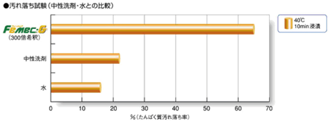
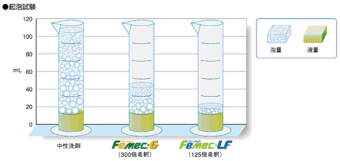
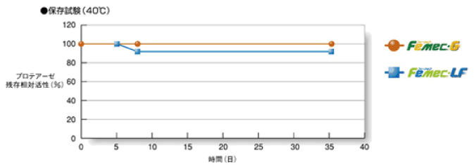

フィーメック
●フィーメックの特性
フィーメックシリーズは、医療用機器・器具等に付着した血液や粘液など、有機物の汚れを酵素の力ですばやく分解・除去。
器具等使用後の洗浄に優れた効果を発揮します。
効果的な洗浄は感染管理の第一歩！
より高い消毒、滅菌効果を得るためには、その器具が十分に洗浄されていることが重要です。
洗浄はより質の高い効果的な衛生管理、感染管理につながる重要なステップです。
酵素がたんぱく質の汚れを強力に分解
・たんぱく質分解酵素のはたらきで、落ちにくい汚れを速やかに除去
泡立ちが少なく、作業もスムーズ
・泡立ちが少ないので、サッと洗い流せます。
安定した酵素活性
・酵素活性を安定に保持
・機器・器具にやさしい洗浄剤です。中性で腐食性がほとんどないため、器具を傷めず安心です。
●使用方法
・希釈液の調製
シリーズを水または温水で希釈します。
約40℃の温水を使用すると洗浄効果がさらにアップします。
希釈液は1日ごとに交換してください。汚れが目立つ場合は、その都度交換してください。
フィーメックＧは300倍希釈で使用します。
専用ポンプ（3mL/1プッシュ）により簡単に調製できます。
・フィーメックＧ/希釈液調製表
| 水または温水の量 | フィーメック‐Ｇ量 |
|---|---|
| 0.9L | 1プッシュ |
| 1.8L | 2プッシュ |
| 2.7L | 3プッシュ |
| 3.6L | 4プッシュ |
| 4.5L | 5プッシュ |
| 5.4L | 6プッシュ |
フィーメック‐ＬＦは100～150倍希釈で使用します。
低泡性のため、自動洗浄機でのご使用に適しています。
・フィーメック‐ＬＦ/希釈液調製表
| 水または温水の量 | フィーメック‐LF量 |
|---|---|
| 1L | 7～10ｍL |
●希釈液の調製
・希釈液に洗浄したい器具を2分間以上浸漬してください。
・汚れが乾燥している場合は、浸漬時間を延長してください。
・内視鏡のチャンネル内を洗浄する場合は、液を吸引した後、ブラッシングを行ってください。
・自動洗浄機をご使用の場合は、各メーカー指定の方法にしたがってください。
●使用上の注意
- ■子供の手が届かない冷暗所に保管してください。
- ■漂白剤、消毒剤やその他の化学薬品と混合しないでください。
- ■取扱いの際はゴム手袋等を着用してください。
- ■眼に入った場合は、多量の水で洗い流し、医師の診察を受けてください。
- ■皮膚に付着した場合は、水でよく洗い流し、医師の診察を受けてください。
- ■換気のよいところで使用してください。
- ■飲用しないでください。万一飲み込んだ場合は、水でうがいをし、水をたくさん飲むなどの処置をした後、医師の診察を受けてください。